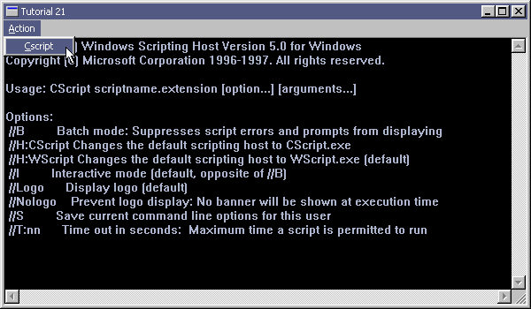

|
Tutorial 21 : Pipe
format PE GUI 4.0
entry start
include '%fasminc%\win32a.inc'
struct SECURITY_ATTRIBUTES
.nLength dd ?
.lpSecurityDescriptor dd ?
.bInheritHandle dd ?
ends
MI_CSCRIPT equ 100
section '.data' data readable writeable
wndH dd ?
insH dd ?
wndClsName db 'TUT_21',0
wndTitle db 'Tutorial 21',0
wndCls WNDCLASS
wndMsg MSG
pipeSecAttr SECURITY_ATTRIBUTES
pipeReadH dd ?
pipeWriteH dd ?
pipeRead dd ?
pipeBuffer rb 0x400
pro1StartInfo STARTUPINFO
pro1Info PROCESS_INFORMATION
pro1CmdLine db 'cscript',0
ctlClsNameEdit db 'EDIT',0
edit1H dd ?
errStr1 db 'Error - Pipe Creation Failed!',0
errStr2 db 'Error - Process Creation Failed!',0
section '.code' code readable executable
start:
invoke GetModuleHandle,0
mov [insH],eax
mov [wndCls.hInstance],eax
mov [wndCls.style],CS_HREDRAW or CS_VREDRAW
mov [wndCls.lpfnWndProc],window_procedure
mov [wndCls.lpszClassName],wndClsName
mov [wndCls.lpszMenuName],30
mov [wndCls.hbrBackground],COLOR_APPWORKSPACE
invoke LoadIcon,NULL,IDI_APPLICATION
mov [wndCls.hIcon],eax
invoke LoadCursor,NULL,IDC_ARROW
mov [wndCls.hCursor],eax
invoke RegisterClass,wndCls
invoke CreateWindowEx,WS_EX_CLIENTEDGE,\
wndClsName,wndTitle,\
WS_OVERLAPPEDWINDOW + WS_VISIBLE,\
CW_USEDEFAULT,CW_USEDEFAULT,\
600,350,\
NULL,NULL,[insH],NULL
mov [wndH],eax
;+---------------------------+
;| entering the message loop |
;+---------------------------+
window_message_loop_start:
invoke GetMessage,wndMsg,NULL,0,0
or eax,eax
je window_message_loop_end
invoke TranslateMessage,wndMsg
invoke DispatchMessage,wndMsg
jmp window_message_loop_start
window_message_loop_end:
invoke ExitProcess,0
;+----------------------+
;| the window procedure |
;+----------------------+
proc window_procedure,hWnd,uMsg,wParam,lParam
push ebx esi edi
cmp [uMsg],WM_CREATE
je wmCREATE
cmp [uMsg],WM_SIZE
je wmSIZE
cmp [uMsg],WM_COMMAND
je wmCOMMAND
cmp [uMsg],WM_CTLCOLOREDIT
je wmCTLCOLOREDIT
cmp [uMsg],WM_DESTROY
je wmDESTROY
wmDEFAULT:
invoke DefWindowProc,[hWnd],[uMsg],[wParam],[lParam]
jmp wmBYE
wmCTLCOLOREDIT:
invoke SetTextColor,[wParam],0x00C9B5AF
invoke SetBkColor,[wParam],0x00000000
invoke GetStockObject,BLACK_BRUSH
jmp wmBYE
wmCOMMAND:
cmp [wParam],0xFFFF and MI_CSCRIPT
je wmCOMMAND_MI_CSCRIPT
jmp wmBYE
wmCOMMAND_MI_CSCRIPT:
mov [pipeSecAttr.nLength], sizeof.SECURITY_ATTRIBUTES
mov [pipeSecAttr.lpSecurityDescriptor],NULL
mov [pipeSecAttr.bInheritHandle],TRUE
invoke CreatePipe,pipeReadH,pipeWriteH,pipeSecAttr,NULL
cmp eax,NULL
je MI_CSCRIPT_error_pipe
mov [pro1StartInfo.cb],sizeof.STARTUPINFO
invoke GetStartupInfo,pro1StartInfo
mov eax,[pipeWriteH]
mov [pro1StartInfo.hStdOutput],eax
mov [pro1StartInfo.hStdError],eax
mov [pro1StartInfo.dwFlags],STARTF_USESHOWWINDOW + STARTF_USESTDHANDLES
mov [pro1StartInfo.wShowWindow],SW_HIDE
;+----------------+
;| create process |
;+----------------+
invoke CreateProcess,NULL,pro1CmdLine,NULL,NULL,TRUE,NULL,NULL,NULL,pro1StartInfo,pro1Info
cmp eax,NULL
je MI_CSCRIPT_error_process
@@:
invoke CloseHandle,[pipeWriteH]
cmp eax,TRUE
jne @b
invoke RtlZeroMemory,pipeBuffer,0x400
invoke ReadFile,[pipeReadH],pipeBuffer,1023,pipeRead,NULL
cmp eax,NULL
je @f
invoke SendMessage,[edit1H],EM_SETSEL,-1,0
invoke SendMessage,[edit1H],EM_REPLACESEL,FALSE,pipeBuffer
;invoke SendMessage,[edit1H],WM_SETTEXT,0,pipeBuffer ;edit control only contain pipeBuffer
jmp @f
MI_CSCRIPT_error_pipe:
invoke MessageBox,[hWnd],errStr1,wndTitle,MB_OK
jmp wmBYE
MI_CSCRIPT_error_process:
invoke MessageBox,[hWnd],errStr2,wndTitle,MB_OK
@@:
invoke CloseHandle,[pipeReadH]
invoke CloseHandle,[pro1Info.hProcess]
invoke CloseHandle,[pro1Info.hThread]
jmp wmBYE
wmSIZE:
mov edx,[lParam]
mov ecx,edx
shr ecx,16 ;height - high order
and edx,0xFFFF ;width - low order
invoke MoveWindow,[edit1H],0,0,edx,ecx,TRUE
jmp wmBYE
wmCREATE:
invoke CreateWindowEx,NULL,ctlClsNameEdit,NULL,\
WS_CHILD + WS_VISIBLE + WS_HSCROLL + WS_VSCROLL + ES_MULTILINE + ES_AUTOHSCROLL + ES_AUTOVSCROLL,\
0,0,0,0,\
[hWnd],NULL,[insH],NULL
mov [edit1H],eax
jmp wmBYE
wmDESTROY:
invoke PostQuitMessage,0
wmBYE:
pop edi esi ebx
return
endp
section '.idata' import data readable
library KERNEL32, 'KERNEL32.DLL',\
USER32, 'USER32.DLL',\
GDI32, 'GDI32.DLL'
import KERNEL32,\
GetModuleHandle, 'GetModuleHandleA',\
CreatePipe, 'CreatePipe',\
CloseHandle, 'CloseHandle',\
CreateProcess, 'CreateProcessA',\
GetStartupInfo, 'GetStartupInfoA',\
RtlZeroMemory, 'RtlZeroMemory',\
ReadFile, 'ReadFile',\
ExitProcess, 'ExitProcess'
import USER32,\
RegisterClass, 'RegisterClassA',\
CreateWindowEx, 'CreateWindowExA',\
DefWindowProc, 'DefWindowProcA',\
LoadCursor, 'LoadCursorA',\
LoadIcon, 'LoadIconA',\
SendMessage, 'SendMessageA',\
GetMessage, 'GetMessageA',\
MessageBox, 'MessageBoxA',\
MoveWindow, 'MoveWindow',\
DestroyWindow, 'DestroyWindow',\
TranslateMessage, 'TranslateMessage',\
DispatchMessage, 'DispatchMessageA',\
PostQuitMessage, 'PostQuitMessage'
import GDI32,\
SetTextColor, 'SetTextColor',\
SetBkColor, 'SetBkColor',\
GetStockObject, 'GetStockObject'
section '.rsrc' resource data readable
directory RT_MENU,appMenu
resource appMenu,\
30,LANG_NEUTRAL,menuMain
menu menuMain
menuitem '&Action',0,MFR_POPUP + MFR_END
menuitem '&Cscript',MI_CSCRIPT,MFR_END
Result :

|